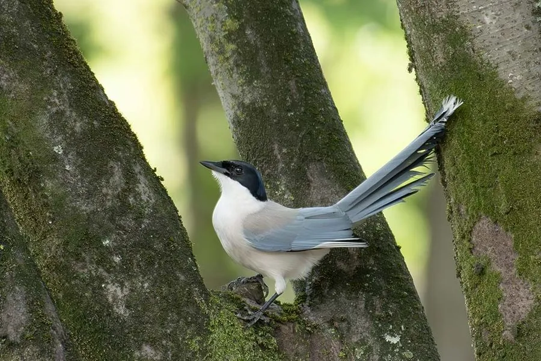

鸟类 · 动物界
灰喜鹊 Cyanopica cyanus

头顶黑色的灰蓝色鹊类，翼尾天蓝、长尾飘逸。常成小群在公园与林缘活动，群体成员会共同育雏，是城市绿地常见鸟类。
- 分类
- 门脊索动物门纲鸟纲目雀形目科鸦科属灰喜鹊属
- 栖息环境
- 低山阔叶林、混交林、公园、果园、行道树与城市绿地，偏好有高大乔木的开放林地。
- 地理分布
- 东亚，包括中国东部、北部、朝鲜半岛与日本；被引入西班牙等欧洲地区。
- 保护级别
- IUCN 红色名录列为无危（LC）；中国列入“三有”陆生野生动物名录。
物种志
灰喜鹊体长约三十三至四十厘米，体重七十至一百克。头顶至后颈黑色，喉部白色，上体灰褐，翼羽和尾羽天蓝色，尾长而具白色端斑。喙黑色，虹膜深褐，脚黑色。雌雄羽色相似，雌鸟体型略小。与喜鹊相比，它体型更修长，羽色以灰蓝为主，黑白对比不强烈。
它栖息于低山阔叶林、混交林、公园、果园与城市绿地，常成十余只的群体活动，在枝间跳跃觅食昆虫、果实和种子，秋季会储藏食物。繁殖期在树上筑碗状巢，每窝产卵五至八枚；群体中常有帮手协助喂养雏鸟，形成合作繁殖行为。鸣声为响亮的“喳—喳”声，群体移动时此起彼伏。灰喜鹊分布于东亚，中国东部和北部常见，被引入欧洲部分地区。它捕食大量松毛虫等林业害虫，列入“三有”名录。
形态与习性
- 体长33–40 厘米（含长尾）
- 体重70–100 克
- 食性昆虫、果实、种子，兼食小型动物
- 繁殖树上碗状巢，每窝 5–8 枚
- 习性群体合作育雏，秋季储食
- 保护级别IUCN 无危；“三有”动物
趣味知识
- 群体中未繁殖的成员会帮助喂养雏鸟。
- 秋季把果实和种子藏在树皮缝里过冬。
- 天蓝色翼羽在飞行时像两片蓝绸。